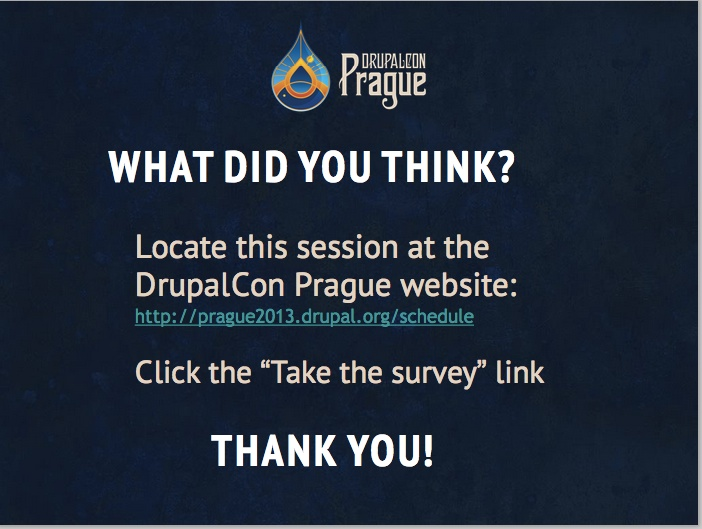

Welcome
Your First Drupal 8 Module
Trainers
Robin Barre
Larry Garfield
Lab Format
- Short lecture
- Lab exercise
- Pair programming recommended
Assuming basic understanding of:
- PHP 5: namespaces and interfaces
- PSR-0, future to be PSR-4
Goals
SWBAT*
- Create routes and controllers for requests
- Define common module plugins
- Store default module settings
- Create pages and blocks and state
- Inspire you to learn more about Drupal 8
Subjects
- HttpKernel
- Routing/Controller
- Theming Basics
- Dependency Injection
- Forms and Configuration
- Plugins/Annotations
Your Setup
- drupal 8 (8.x branch)
- stuffed animal
- drupalgotchi module
cd modules/
git clone git@github.com:palantirnet/drupalgotchi.git
git checkout lab-01-initial
Drupalgotchi Introduction
Tamagotchi: http://en.wikipedia.org/wiki/Tamagotchi
- hand-held digital device
- alien species!
- Care: feed, play, discipline
Drupalgotchi
- Give it a name
- Visit your site as admin user to increase "happiness"
cd sites/all/modules/
git clone git@github.com:palantirnet/drupalgotchi.git
git checkout lab-01-initial
Understanding the web
PHP 4 architecture

HTTP Architecture

Symfony/HttpKernel architecture

interface HttpKernelInterface {
const MASTER_REQUEST = 1;
const SUB_REQUEST = 2;
/**
* Handles a Request to convert it to a Response.
*
* @param Request $request A Request instance
* @param integer $type The type of the request
* @param Boolean $catch Whether to catch exceptions or not
*
* @return Response A Response instance
*/
public function handle(Request $request, $type = self::MASTER_REQUEST, $catch = true);
}
HttpKernel pipeline

Controllers
(The concept formerly known as page callbacks and now represented by a PHP callable...)
use Symfony\Component\HttpFoundation\Response;
class MyControllers {
public function hello() {
return new Response('<html><body>Hello World</body></html>');
}
}
use Symfony\Component\HttpFoundation\Response;
use Symfony\Component\HttpFoundation\JsonResponse;
class MyControllers {
public function hello() {
return new Response('<html><body>Hello World</body></html>');
}
public function helloJson() {
$data['Hello'] = 'World';
return new JsonResponse($data);
}
}
class MyControllers {
public function helloString() {
return "The view event will turn this into a response.";
}
}
class MyControllers {
public function helloDrupal() {
return array(
'#theme' => 'a_drupal_render_array',
'#description' => 'Those still exist.',
);
}
}
use Symfony\Component\HttpFoundation\StreamedResponse;
class MyControllers {
public function helloCsvStream() {
$some_data = $this->getFromSomewhere();
$response = new StreamedResponse();
$response->headers->set('Content-Type', 'text/csv');
$response->setCallback(function () use ($some_data) {
foreach ($some_data as $record) {
print implode(', ', $record);
}
});
}
}
use Symfony\Component\HttpFoundation\BinaryFileResponse;
class MyControllers {
public function helloFile() {
$response = new BinaryFileResponse('hello_world.png');
// Do this in settings.php if you know you're on nginx or
// have the Apache module enabled.
$response::trustXSendfileTypeHeader();
return $response;
}
}
use Symfony\Component\HttpFoundation\Response;
class MyControllers {
public function helloEmpty() {
$this->doSomething();
$response = new Response();
$response->setStatusCode(204);
return $response;
}
}
use Symfony\Component\HttpFoundation\Response;
class MyControllers {
public function helloCoffee() {
if ($this->isTeapot()) {
$response = new Response("Don't put coffee in me", 418);
return $response;
}
// ...
}
}
/hello/world/{from}/{to}
class MyControllers {
public function helloDrupal($to, $from, Request $request) {
return array(
'#theme' => 'love_letter',
'#from' => $from,
'#to' => $to,
);
}
}
mymodule.routing.yml
mymodule.hello_world:
path: '/hello/world/{from}/{to}'
defaults:
_content: '\Drupal\mymodule\Controller\HelloController::helloWorld'
requirements:
_permission: 'access content'
from: \s+
to: \s+
Your turn!
https://github.com/palantirnet/drupalgotchi
git checkout lab-01-initial
Write the following controllers:
- Returns the string "Hello world", as a Drupal page.
- Returns a JSON string that says "hello world".
And now, with templates!
- Templates are now Twig files
- More secure, more powerful, more awesome
- (And fewer divs, but that's a separate matter)
Example
{% trans %}
Hello {{ person }}! My name is {{ name }}
{% endtrans %}
Text in {% trans %} is safely escaped. Outside of that, use:
{{ foo|escape('html') }}New controller
Accepts a name as a path parameter, and uses a template to say "Hello $name".
Complete controller code:
git checkout lab-02-controller-complete
Routing
(You don't need to know every detail of this.)
It's all listeners
KernelEvents::REQUEST
Dynamic Router

Route Enhancers
class ContentControllerEnhancer implements RouteEnhancerInterface {
protected $types = array(
'drupal_dialog' => 'controller.dialog:dialog',
'drupal_modal' => 'controller.dialog:modal',
'html' => 'controller.page:content',
);
public function enhance(array $defaults, Request $request) {
if (empty($defaults['_controller']) && !empty($defaults['_content'])) {
$type = $this->negotiation->getContentType($request);
if (isset($this->types[$type])) {
$defaults['_controller'] = $this->types[$type];
}
}
return $defaults;
}
}
Access control
Authentication vs. Authorization
(Yep, more listeners)
Authentication
global $user is dead
Long live the current_user service!
Access control
- Multiple "checkers" per route
- Applies or not
- Allow, Deny, Kill
- Any vs. All
Route with access
comment.edit_page:
path: '/comment/{comment}/edit'
defaults:
_entity_form: 'comment.default'
options:
_access_mode: 'ANY'
requirements:
_entity_access: 'comment.update'
_permission: 'edit any comment'
Permission check
class PermissionAccessCheck implements StaticAccessCheckInterface {
protected $currentUser;
public function __construct(AccountInterface $user) {
$this->currentUser = $user;
}
public function appliesTo() {
return array('_permission');
}
public function access(Route $route, Request $request) {
$permission = $route->getRequirement('_permission');
return $this->currentUser->hasPermission($permission) ? static::ALLOW : static::DENY;
}
}
Dependency Injection
It's way less scary than it sounds
Dependency
An object on which your object depends
Service
A generally-stateless "global" object
class Status {
public function show() {
$status = db_query('SELECT status from {table}')->fetchOne();
return $status;
}
}
$status = new Status();
print $status->show();
class Status {
protected $db;
pubic function __construct(Database $db) {
$this->db = $db;
}
public function show() {
$status = $this->db->query('SELECT status from {table}')->fetchOne();
return $status;
}
}
$db = new Database();
$status = new Status($db);
print $status->show();
class Status {
protected $db;
pubic function __construct(DatabaseInterface $db) {
$this->db = $db;
}
public function show() {
$status = $this->db->query('SELECT status from {table}')->fetchOne();
return $status;
}
}
$db = new Database();
$status = new Status($db);
print $status->show();
class Status {
protected $db;
pubic function __construct(Database $db) {
$this->db = $db;
}
public function show() {
$status = $this->db->query('SELECT status from {table}')->fetchOne();
return $status;
}
}
$db_settings = array(...);
$db = new Database($db_settings);
$status = new Status($db);
print $status->show();
Dependency Injection "Container"
"Place where you wire that stuff up in advance"
"Scariest possible name for an array of objects"
$status = $container->get('status');
print $status->show();
Dependency Injection Container
- You'll almost never interact with it directly
- Configure via... YAML
- Your classes should not know about it
- Focus on testability and swappability
core.services.yml
services:
router.dynamic:
class: Symfony\Cmf\Component\Routing\DynamicRouter
arguments: ['@router.request_context', '@router.matcher', '@url_generator']
legacy_url_matcher:
class: Drupal\Core\LegacyUrlMatcher
legacy_router:
class: Symfony\Cmf\Component\Routing\DynamicRouter
arguments: ['@router.request_context', '@legacy_url_matcher', '@legacy_generator']
router:
class: Symfony\Cmf\Component\Routing\ChainRouter
calls:
- [setContext, ['@router.request_context']]
- [add, ['@router.dynamic']]
- [add, ['@legacy_router']]
public function createRouter() {
$router = new \Symfony\Cmf\Component\Routing\ChainRouter(
$this->createDynamicRouter(),
$this->createLegacyRouter()
);
$router->setContext($this->createRouterRequestContext());
$router->add($router_dynamic);
$router->add($legacy_router);
return $router;
}
Configuration Management
Configuration Management (CMI)
- Configuration is everything users and editors do not write
- Usual Suspects:
- views
- content types
- view modes
- image styles
- permissions
- settings
Config: In the Files!
- eliminated 50 tables from the drupal db
- writes directly to files not the db
- written in YAML (.yml): http://en.wikipedia.org/wiki/YAML
- translatable
base_field: nid
base_table: node
core: 8.x
description: 'Find and manage content.'
status: '1'
display:
default:
display_options:
access:
type: perm
options:
perm: 'access content overview'
cache:
type: none
query:
type: views_query
exposed_form:
type: basic
Forms and Configuration
- FormInterface
- buildForm
- validateForm
- submitForm
- Admin settings use case
Forms
Create Admin Settings for Drupalgotchi
Allow administrator to set values:
- drupalgotchi name
- attention setting
Settings Form Need
- a route
- a menu item
- configuration schema
- default values
- a form that extends ConfigFormBase
Start with branch:
git checkout lab-02-controller-complete
Route to the form
drupalgotchi/drupalgotchi.routing.yml
drupalgotchi_settings:
path: '/admin/config/system/drupalgotchi'
defaults:
_form: '\Drupal\drupalgotchi\Form\SettingsForm'
requirements:
_permission: 'administer drupalgotchi'
Menu item for a link to the form
drupalgotchi/drupalgotchi.module
function drupalgotchi_menu() {
$items['admin/config/system/drupalgotchi'] = array(
'title' => 'Configure Drupalgotchi',
'description' => 'Setup the Drupalgotchi for your site.',
'route_name' => 'drupalgotchi.settings',
);
return $items;
}
Configuration Schema
drupalgotchi/config/schema/drupalgotchi.settings.yml
# Schema for the configuration files of the Drupalgotchi module.
drupalgotchi.settings:
type: mapping
label: 'Drupalgotchi settings'
mapping:
name:
type: string
label: "The name of your site's persona"
needy:
type: integer
label: 'How needy your site is'
Default Values for Settings
same file name, different location
drupalgotchi/config/drupalgotchi.settings.yml
needy: 10
name: ''
ConfigFormBase
Note how the __construct() uses ConfigFactory
drupalgotchi/lib/Drupal/drupalgotchi/Form/SettingsForm.php
class SettingsForm extends ConfigFormBase {
protected $config;
public function __construct(Config $config) {
$this->config = $config;
}
public static function create(ContainerInterface $container) {
return new static(
$container->get('config.factory')->get('drupalgotchi.settings')
);
}
public function getFormID() {
return 'drupalgotchi_settings';
}
Drupalgotchi Settings Form (buildForm)
drupalgotchi/lib/Drupal/drupalgotchi/Form/SettingsForm.php
public function buildForm(array $form, array &$form_state) {
$form['name'] = array(
'#title' => t('Name'),
'#description' => t('What is your site animal\'s name?'),
'#type' => 'textfield',
'#default_value' => $this->config->get('name'),
);
$form['needy'] = array(
'#title' => t('Neediness'),
'#description' => t('How needy the site is for attention. Range is from 1-10.'),
'#type' => 'range',
'#step' => 1,
'#min' => 1,
'#max' => 10,
'#default_value' => $this->config->get('needy'),
);
return parent::buildForm($form, $form_state);
}
Drupalgotchi Settings Form
(submitForm)
drupalgotchi/lib/Drupal/drupalgotchi/Form/SettingsForm.php
public function submitForm(array &$form, array &$form_state) {
parent::submitForm($form, $form_state);
$this->config->set('name', $form_state['values']['name']);
$this->config->set('needy', $form_state['values']['needy']);
$this->config->save();
}
} // end of class
now, you try!
- Create a configuration schema
- Provide default values for the schema
- Create a Settings Form for Drupalgotchi
Complete code in branch:
git checkout lab-03-forms-complete
Plugins
Plugins
A narrow set of functionality
Plugin Systems
allows customization and extension of the original system
- e.g. graphics software: processing image files
In Drupal 7?
One plugin system for all
a new universal plugin system supports:
- plugin types
- plugin discovery
- plugin factory
Managers define and manage plugin types
- BlockManager
- ArchiverManager
- EditorManager
Plugin Types
- Blocks
- Actions
- Views
- [field]Formatters
Example of a block plugin
/* Annotation */
class HelloBlock extends BlockBase {
public function settings() { }
public function blockForm($form, &$form_state) { }
public function blockSubmit($form, &$form_state) { }
public function build() { }
}
What is Plugin "Discovery"?
find plugins, metadata
parse plugin metadata
use annotations
modulename/
lib/
Drupal/
modulename/
Plugin/
plugintype/
pluginname.php
---
action/
lib/
Drupal/
action/
Plugin/
Action/
EmailAction.php
Metadata
Annotations provide the metadata
Annotation Types e.g. EntityType, ActionType
use Drupal\Component\Annotation\Plugin; /* required */
/**
* @Plugin(
* ...
* )
*/
Appears just above your plugin class
Annotations
- key-value data structures with nesting support
/**
* Provides a hello block.
*
* @Block(
* id = "drupalgotchi_hello",
* admin_label = @Translation("Hello World"),
* )
*/
- what key-value pairs? check the annotation type class:
core/lib/Drupal/core/Entity/Annotations/EntityType.phpAnnotation Guidelines
- id = machine_name
- Always use double quotes
- Strings must use quotes
- Numbers and Booleans must NOT use quotes
- No trailing commas!
- Doctrine: http://docs.doctrine-project.org/en/2.0.x/reference/annotations-reference.html
/**
* Provides a hello block.
*
* @Block(
* id = "drupalgotchi_hello",
* admin_label = @Translation("Hello World"),
* )
*/
Exercise: Create a block
git checkout lab-03-forms-complete
- Set metadata (annotations) for HelloBlock.php
- create the render array
- create a template file
- notify theme layer about our new template
- place HelloBlock in a region
- Extra credit: DrupalgotchiBlock.php
- Get Drupalgotchi name
- Get Drupalgotchi state: neediness
- Display name and state in the block
- place Drupalgotchi block in a region
Create a block (hint)
- HelloBlock.php
- Set the metadata (in Annotations)
/**
* Provides a hello block.
*
* @Block(
* id = "drupalgotchi_hello",
* admin_label = @Translation("Hello World"),
* )
*/
- pull in settings
public function settings() {
return array(
'person' => 'World',
);
}
Create a block (hint)
- create the render array
public function build() {
return array(
'#theme' => 'drupalgotchi_hello_block',
'#person' => $this->configuration['person'],
);
}
drupalgotchi/templates/drupalgotchi-hello-block.html.twig
{% trans %}
Hello there. My name is {{ name }}!
{% endtrans %}
Create a block (hint)
- notify the theme about your new template file
function drupalgotchi_theme() {
return array(
'drupalgotchi_hello_block' => array(
'variables' => array('person' => NULL),
'template' => 'drupalgotchi-hello-block',
)
);
}
Complete code:
git checkout lab-04-blocks-completeAll code in master branch:
git checkout masterReview and wrap-up
Key take-aways
Think in loosely coupled objects,
not just loosely coupled modules
Separate business logic from glue code
Display logic happens
at the display layer
The future is a very different place
But a really cool one
(Always bring your towel)
Drupal 8 Essentials
Upcoming training events in Chicago, IL
2 day training for developers who want to learn D8
- December 3 - 4, 2013
- February 25 - 26, 2014
Thank you!
See you online!
Evaluation
Credits
Slides: Larry Garfield, Robin Barre
Graphics: Larry Garfield, Ashley Cyborski
©2013 Palantir.net
Interested in website development or training?
Drop us a line!